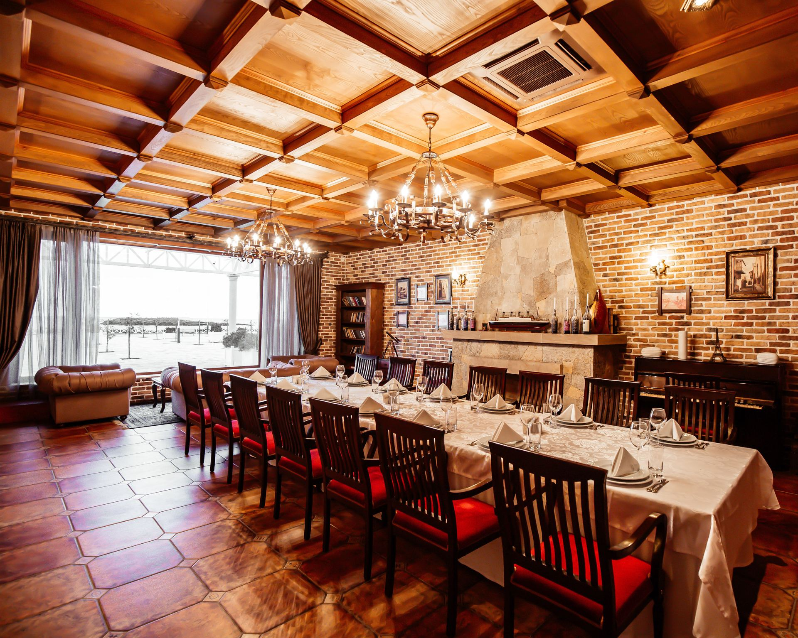
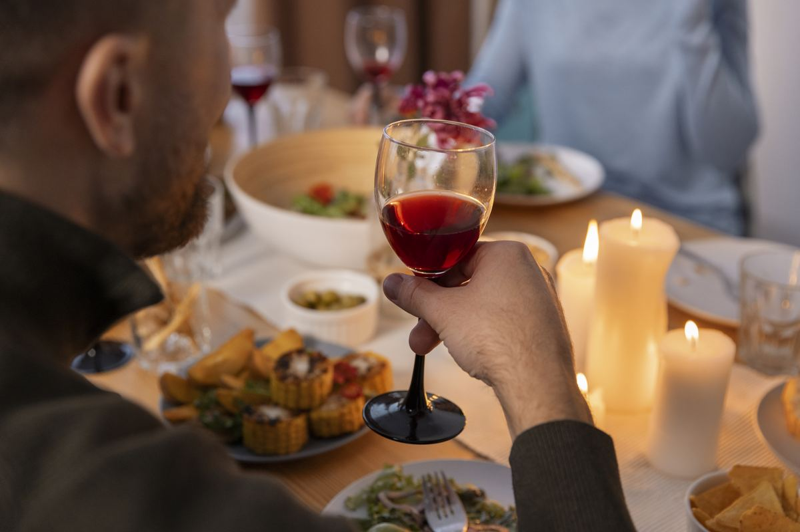
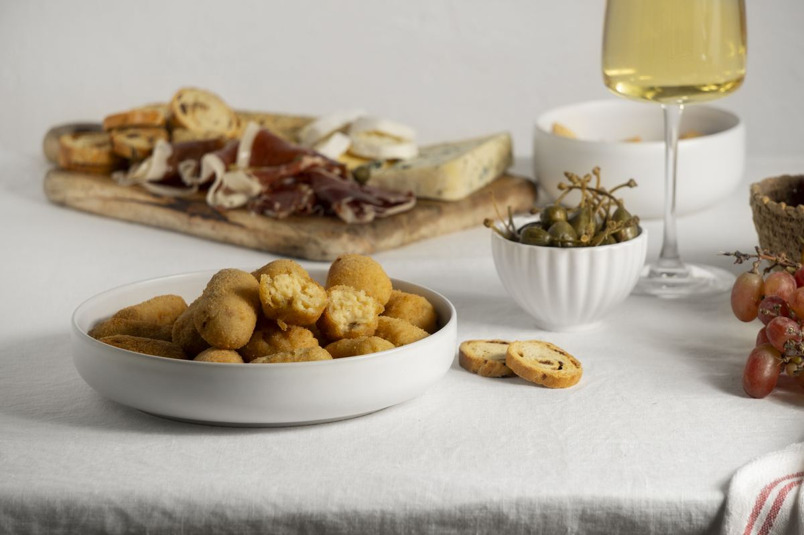
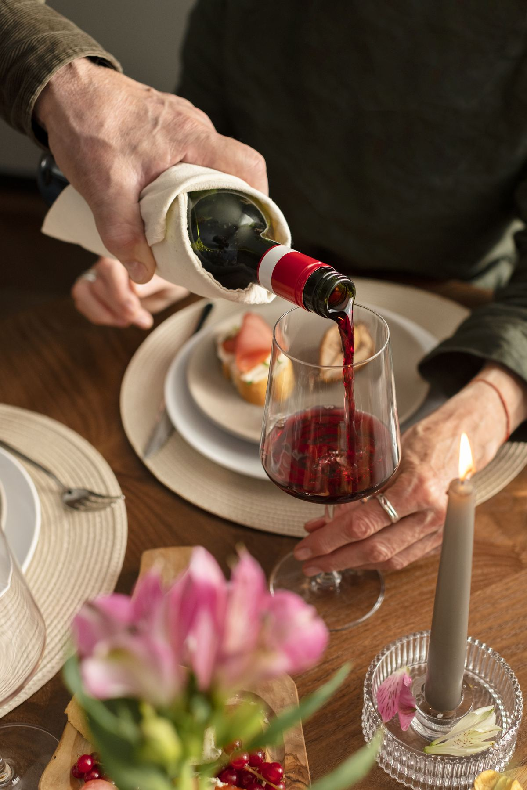
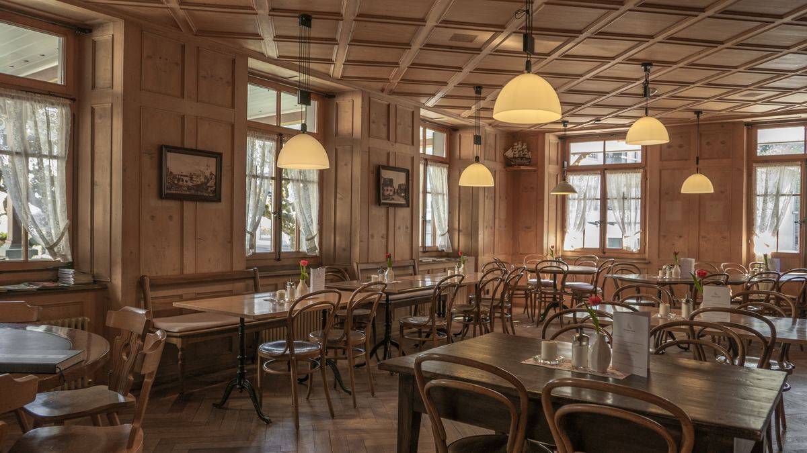
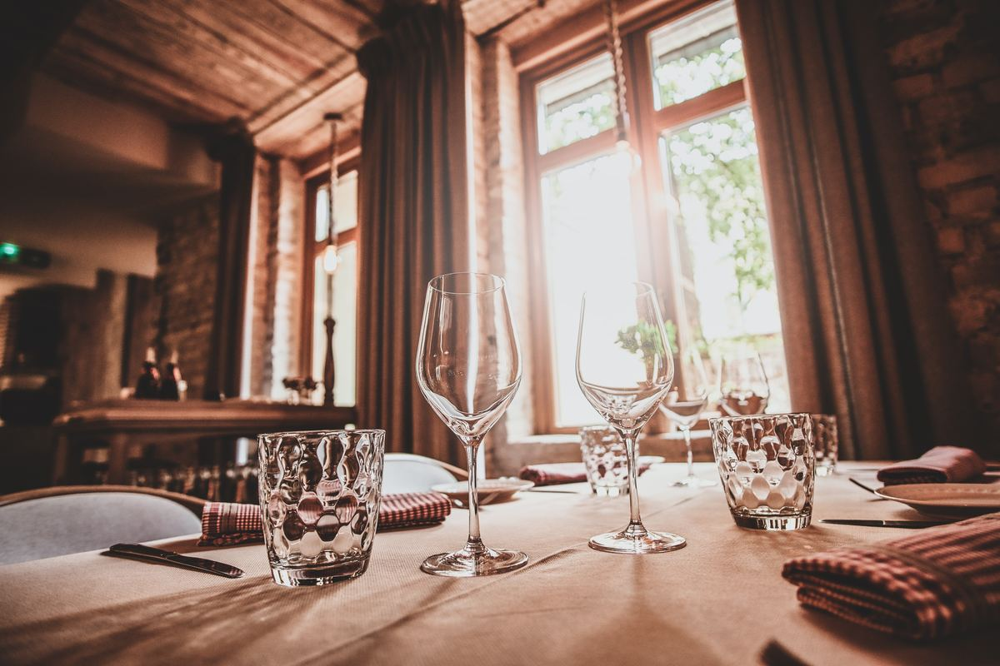

Entrantes y pintxos
Para empezar compartiendo: lo que pida la temporada y lo que nunca puede faltar en la barra.
desde 3,50 €
Cocina honesta y de temporada, servida sin prisas. Un sitio para comer bien, celebrar lo que haga falta y volver. Reserva tu mesa por teléfono o WhatsApp y te la guardamos.

Zero 11 Ruzafa | Cervecería | Bar | Tapas es de esos sitios que se recomiendan en voz baja, de amigo a amigo. Cocina de casa, producto del mercado y una sala donde nadie te mete prisa: lo de siempre, hecho como se debe.
Esta página es una propuesta de cómo podría presentarse en internet: con su carta, su horario, sus fotos y las reservas a un toque de teléfono. Los textos y las imágenes de muestra se sustituyen por los reales del negocio.
Una idea de cómo luciría la carta de Zero 11 Ruzafa | Cervecería | Bar | Tapas en su web: por secciones, con foto y al día. Cambiar un plato o un precio llevaría un minuto.
Para empezar compartiendo: lo que pida la temporada y lo que nunca puede faltar en la barra.
desde 3,50 €
Cremosas por dentro, doradas por fuera. De las que se piden "otra ración más" sin mirar la carta.
9,50 €
Carnes hechas en su punto, con paciencia y buena materia prima. El plato fuerte de la casa.
18,90 €
Guisos de puchero que saben a domingo en casa. El plato que cambia con el mercado y la estación.
13,50 €
Hechos aquí, como todo lo demás. Para cerrar la comida con el café y la sobremesa que merece.
desde 5,00 €
Vinos bien elegidos para acompañar la mesa, del blanco fresco de la zona al tinto de siempre.
desde 2,50 €Una buena mesa se recuerda. Y a la que se vuelve, se trae a alguien.
Sin secretos: buen producto, cocina con tiempo y una sala que cuida a quien se sienta.
Compra diaria y de temporada. Lo que no convence, no entra en la cocina.
Recetas de casa hechas con tiempo, que es el ingrediente que no se puede comprar.
Mesa puesta, vino servido y nadie mirando el reloj. Aquí se viene a estar bien.
Café, postre y conversación. La parte de la comida que no sale en la cuenta.
Fotos de muestra para esta propuesta: en la versión definitiva irían las fotos reales de Zero 11 Ruzafa | Cervecería | Bar | Tapas — su sala, sus platos y su gente.


Con una web así, quien busque Zero 11 Ruzafa | Cervecería | Bar | Tapas en el móvil encuentra el horario, la carta y el botón de reservar en cinco segundos. Una llamada o un WhatsApp, y mesa guardada.
Si trabajáis con grupos, menús del día o celebraciones, también tendrían aquí su sitio.
Horario orientativo de muestra para esta propuesta — se sustituye por el horario real del restaurante.
| Lunes | Cerrado |
| Martes | 12:00 — 16:00 |
| Miércoles | 12:00 — 16:00 |
| Jueves | 12:00 — 16:00 · 19:30 — 23:00 |
| Viernes | 12:00 — 16:00 · 19:30 — 23:30 |
| Sábado | 12:00 — 16:30 · 19:30 — 23:30 |
| Domingo | 12:00 — 16:30 |
Los fines de semana es lo más seguro. Puedes reservar llamando al 653 16 10 89 o por WhatsApp, y te guardamos la mesa.
Sí: cuadrillas, familias y celebraciones. Cuéntanos cuántos sois y lo preparamos.
Avísanos al reservar o al pedir y te orientamos con la carta sin problema.
En Valencia (Valencia). Tienes el mapa y cómo llegar en la sección de Ubicación.
No: es una maqueta de demostración preparada por G&G Elcano. Los textos, fotos, carta y horario de muestra se sustituyen por los reales del restaurante.
Estamos en Valencia (Valencia). Reserva por teléfono o WhatsApp y te esperamos con la mesa puesta.